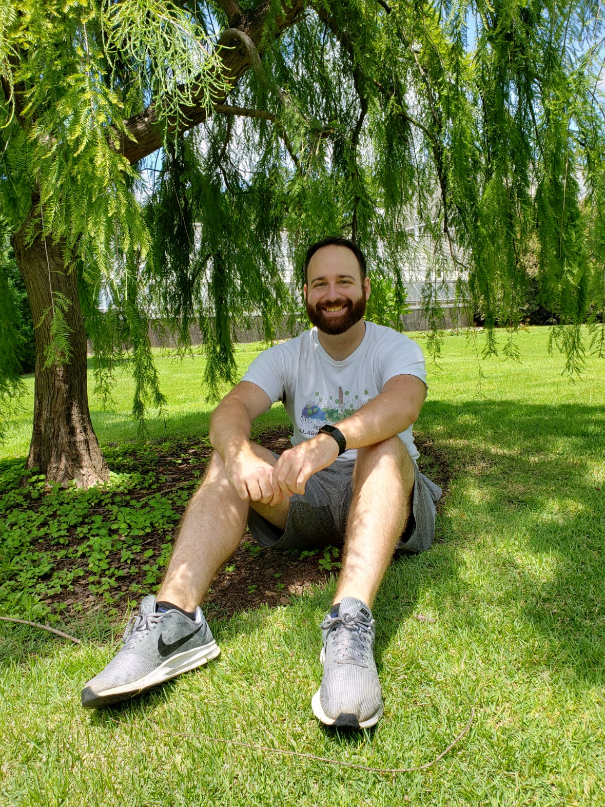
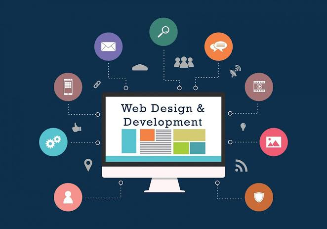
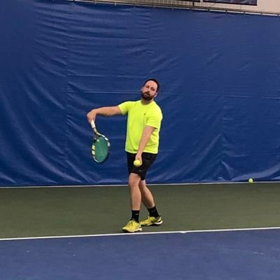
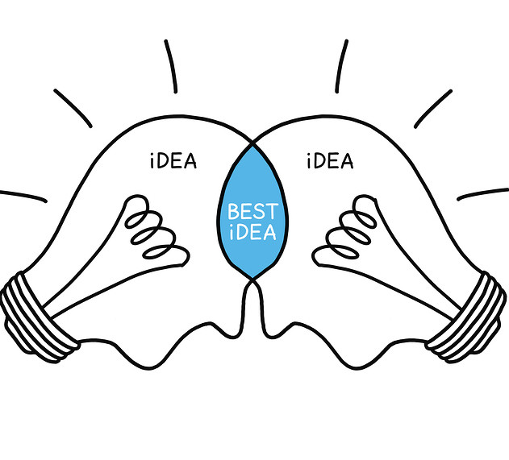

Passionate about creating user-friendly applications through team collaboration
I am a self-taught Front-End Developer with the passion and drive to become one of the best. I love team collaboration and designing user-friendly applications that provide great experiences.
My journey in coding started in High School with a visual basics class, where my dad helped me solve problems and build applications together. That experience sparked my interest in web development, and I've been pursuing this career path ever since.
I believe in clean code, continuous learning, and creating solutions that make a difference. When I'm not coding, I enjoy staying active, learning new technologies, and contributing to the developer community.

I started learning coding in High School. I took a visual basics class and whenever I got stuck, my dad was there to help me solve the issues. It was a great time working together to build applications. Since then, I've been wanting to start a career in web development.
Today, I focus on front-end technologies and creating responsive, accessible web applications that provide excellent user experiences.

I started playing tennis in high school and have loved it ever since. I love the competition and the exercise it provides. Tennis is a great sport that I can play for a lifetime.
I coached for a few years and loved helping others improve their game. The strategic thinking and focus required in tennis have helped me develop problem-solving skills that I apply to my development work.

I thrive in collaborative environments where ideas are shared and refined. Working with others to solve complex problems and create better solutions is one of the most rewarding aspects of development for me.
I believe that diverse teams create the best products, and I enjoy both learning from others and sharing my knowledge to help the team succeed.
DanielBays.Codes@gmail.com
United States
Open to new opportunities